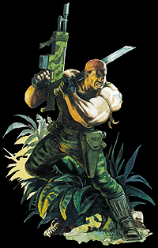

Imperial Forces |
Force Disposition Introduction |
Ork Forces |
|
 As soon as the sheer number of feral Orks pouring out of the mountains of the Equatorial Jungles became apparent, two full regiments of the infamous Catachan Jungle Fighters were dispatched to Cerbera Base. The legacy of the Second Armageddon War, the citizens of Armageddon had no idea just how many of the aliens had been quietly flourishing in the humid, overgrown belt of dense jungle dividing Armageddon Prime and Secundus. Although their numbers had been thought to have been kept in check by the native Armageddon Ork Hunters, the presence of Ghazghkull on the planet has triggered a massive increase in Ork presence throughout the jungle, from which they stage their raids on the Imperial settlements around Death Mire and Cerbera Base. Commissar Yarrick has quite rightly assumed that due to the Catachan's upbringing on one of the harshest Death Worlds in the galaxy, they would be more than capable of taking on the Feral Orks in this region, even on home ground. In fact, many a Catachan fighter has described patrolling the steaming, Ork-infested jungles as akin to paid leave. In reality, however, the Orks outnumber the Catachan forces roughly thirty to one, and it is a hard-fought struggle that the Catachans are immersed in. Many times the Orks have surrounded the Catachans completely, cutting them off from Cerbera. As a result the Catachans have been known to go for weeks without contacting base. Several high-ranking Imperial officers have proffered the theory that squads of Catachans have been deliberately cutting themselves off from their superiors, content in the knowledge that when they are deep in the jungle, they know exactly what they are doing. |
| ||||||||||||||||||||||||||||||||||||||||||||||||||
|
The smell of burning Ork bodies permeating through the Equatorial jungle is testament to the brutal efficiency of the Catachans. Most of the small squadrons of jungle fighters are equipped with heavy flamers, as not only are they extremely effective in such densely packed terrain, but the only way to properly cleanse the Ork infection from a location is to immolate their corpses until all organic material is destroyed. Due to the exessively humid atmosphere and heavy water-laden leaves of the native trees, these fires are generally controlled. If an Ork nest is located, however, whole hectares are burnt to the ground. Yarrick himself has authorised these extreme measures in an attempt to rid Armageddon of Ork spores completely. At night, from Cerbera base, the jungle is lit by hundreds of blazing fires. The screams of dying greenskins ring out over the howls and hoots of jungle beasts. Most of the troops stationed in Cerbera have learnt to sleep through this horrendous noise over several painful weeks. In the Catachans, the Imperium knows it has found the right tool for the job. Even assuming that the planet is not overrun by the aliens, it will be many years before the Ork population is culled, let alone wiped out completely. Catachans on Armageddon In the Catachans, Commissar Yarrick saw the perfect solution to a difficult problem. The Equatorial Jungles dividing Armageddon Prime and Secundus have exploded with an unprecedented amount of feral Orks, the legacy of the second Armageddon War. Several regiments of Catachans now bolster the Imperial forces in this sector, and the Jungle Fighters have already taken a heavy toll on the Ork population. Since they were assigned, however, many of the Catachan squads have failed to communicate with their commanding officers, and many others have seemed to become as feral as their alien quarries. It has been proposed that the Catachans fighting there should be stationed at Cerbera indefinitely. | |||||||||||||||||||||||||||||||||||||||||||||||||||